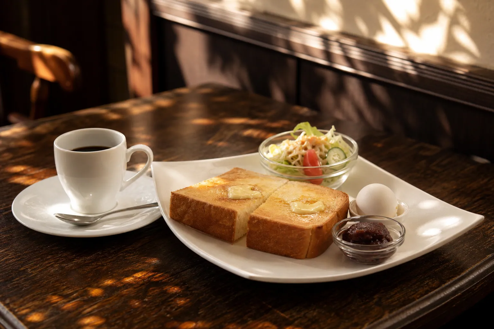
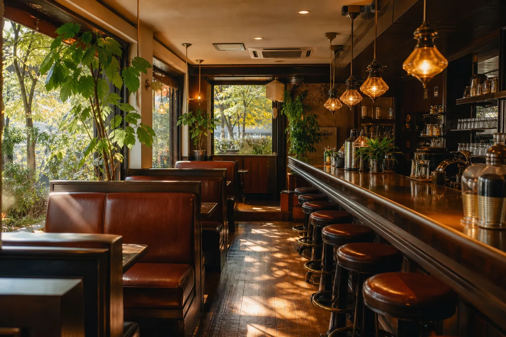

Aboutこもれびのこと
四十年あまり、同じ窓辺でコーヒーを。
喫茶こもれびは、1978年に先代が開いた小さな喫茶店です。けやき並木に面した大きな窓から、朝はやわらかな木もれ日が差し込みます。店の名前は、その光から付けました。
いまは二代目の店主が、先代から受け継いだネルの布とケトルでコーヒーを淹れています。新聞を広げる常連さん、出勤前に立ち寄る方、散歩帰りのご夫婦。それぞれの朝に、変わらない一杯をお出しすることが、私たちの仕事です。
店主 小森 健二
-
01
ネルドリップで、
一杯ずつ 焙煎所から週に二度届く豆を、注文ごとに挽いてネルで淹れます。とろりとした口あたりと、冷めてもやさしい甘さが特徴です。
-
02
小倉あんは、
毎朝お店で 北海道産の小豆を、開店前に店で炊いています。甘さはひかえめ、粒感はしっかり。トーストにたっぷりのせてお出しします。
-
03
厚切りパンは、
近所のベーカリーから 同じ通りのパン屋さんが、毎朝焼きたての食パンを届けてくれます。4センチの厚切りを、外はさっくり、中はふんわり焼き上げます。
Morning Serviceモーニング
ドリンク代だけで、朝ごはん。
名古屋の喫茶店では、朝の時間にドリンクを頼むとトーストやゆで玉子がついてきます。こもれびでは、その日の気分で選べる3つのセットをご用意しています。
7:00 – 11:00毎日（水曜定休）
トーストの追加は＋150円。小倉あんは数に限りがあり、なくなり次第バタートーストに替えてお出しします。

-
A
トーストセット
厚切りバタートースト、ゆで玉子
ドリンク代のみ
-
B
いちばん人気
小倉トーストセット
自家製小倉あんの厚切りトースト、ゆで玉子
ドリンク代＋100円
-
C
玉子サンドセット
ふわふわ玉子サンド（ハーフ）、ミニサラダ
ドリンク代＋200円
※価格は税込です。※掲載の料金・数値・お客さまの声は、ポートフォリオ用の架空データです。
Our Room店内のようす
ひとりでも、ふたりでも、長居したくなる席を。

カウンター6席と、窓ぎわのボックス席が4卓。けやきの葉がゆれる時間帯は、テーブルの上に木もれ日の模様が映ります。
- 席数24席（カウンター6・テーブル18）
- 禁煙全席禁煙
- 読みもの新聞2紙・雑誌・文庫本
- お子さまベビーカーのまま入店できます
- 駐車場店舗横に3台
- お支払い現金・各種キャッシュレス
A Day at Komorebiこもれびの一日
朝から夕方まで、時間ごとの楽しみかた。
-
開店・モーニング
朝日が差し込む、いちばん静かな時間。出勤前の一杯にも。
-
ランチタイム
ナポリタンやカレーなど、喫茶店のごはんをどうぞ。
-
おやつの時間
固めのプリンとクリームソーダで、ひと休み。
-
夕方のコーヒー
西日がやわらぐころ。深煎りをゆっくりどうぞ。
-
閉店
土日祝は17:00閉店。L.O.は閉店30分前です。
Voicesお客さまの声
いつもの席から、いただいた言葉。
-
出勤前に小倉トーストのセットを食べるのが習慣になりました。マスターが顔を覚えていてくれて、座るとすぐにブレンドが出てくるのがうれしいです。
30代・会社員の方
-
夫婦で朝の散歩のあとに寄っています。窓ぎわの席で新聞を読みながら過ごす時間が、一日のなかでいちばん好きです。
70代・ご近所のご夫婦
-
子どもが小さくても入りやすい雰囲気で助かっています。プリンは固めで昔ながらの味。家族みんなのお気に入りです。
30代・子育て中の方
※掲載のお客さまの声は、ポートフォリオ用の架空データです。
Newsお知らせ
お店からのお知らせ
- 季節限定
秋限定「栗のプリン」を始めました。11月末までの予定です。
- お持ち帰り
こもれびブレンドの豆を、100gから量り売りしています。挽き方もお選びいただけます。
- 営業
9月23日（水・祝）は、祝日のため通常どおり営業いたします。
Hours & Access営業時間・アクセス
けやき並木の、角のお店です。
| 曜日 | 営業時間 | モーニング |
|---|---|---|
| 月・火・木・金 | 7:00 – 18:00 | 〜11:00 |
| 土・日・祝 | 7:00 – 17:00 | 〜11:00 |
| 水 | 定休日（祝日の場合は営業） | |
ラストオーダーは閉店の30分前です。モーニングは11時までのご注文分までお作りします。
- 店名
- 喫茶こもれび
- 住所
- 〒467-0000
愛知県名古屋市〇〇区〇〇1-2-3 - アクセス
- 地下鉄「〇〇駅」から徒歩5分
市バス「〇〇町」停留所すぐ - 駐車場
- 店舗横に3台（満車時は近隣のコインパーキングをご利用ください）
MAP
架空店舗のため、地図は掲載していません
Contactお問い合わせ
貸切・豆のご注文は、お気軽に。
少人数の集まりでの貸切（最大20名さま）や、コーヒー豆のまとめてのご注文を承っています。お急ぎの方はお電話でどうぞ。
お電話（営業時間内）052-000-0000メール：info@example.jp
- 貸切18:00以降、最大20名さま。お食事は要相談。
- 豆の注文こもれびブレンド 100g〜。挽き方もお選びいただけます。
- テイクアウトコーヒー・プリン・小倉あんの瓶詰め。
Open7:00 – 18:00（土日祝は17:00まで）／ 水曜定休